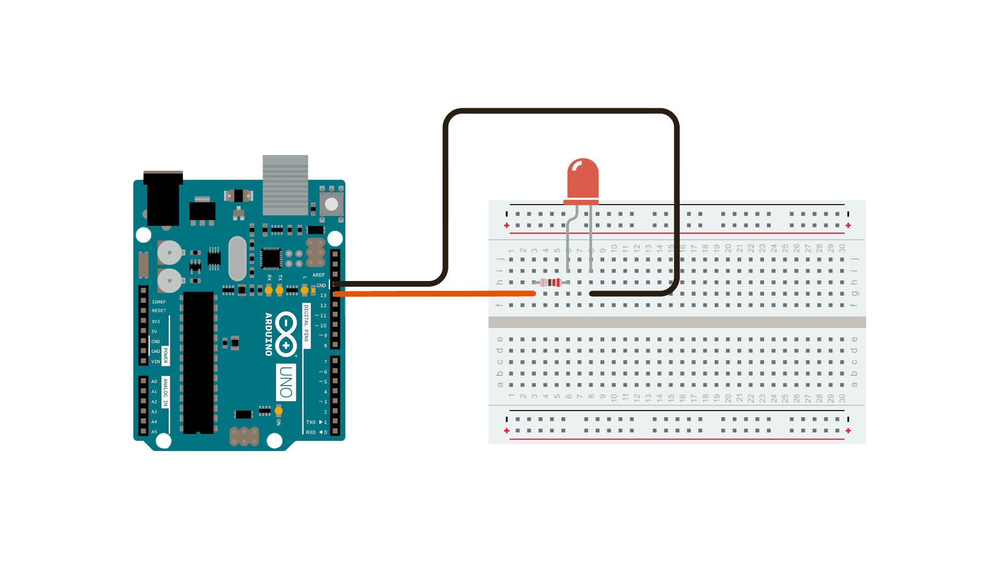

Demonstrates the use of analog output to fade an LED.
This example demonstrates the use of the analogWrite() fucntion in fading an LED off and on. AnalogWrite uses pulse width modulation (PWM), turning a digital pin on and off very quickly with different ratio between on and off, to create a fading effect.
Connect the anode (the longer, positive leg) of your LED to digital output pin 9 on your board through a 220 ohm resistor. Connect the cathode (the shorter, negative leg) directly to ground.
After declaring pin 9 to be your ledPin, there is nothing to do in the setup() function of your code.
The analogWrite() function that you will be using in the main loop of your code requires two arguments: One telling the function which pin to write to, and one indicating what PWM value to write.
In order to fade your LED off and on, gradually increase your PWM value from 0 (all the way off) to 255 (all the way on), and then back to 0 once again to complete the cycle. In the sketch below, the PWM value is set using a variable called brightness. Each time through the loop, it increases by the value of the variable fadeAmount.
analogWrite() can change the PWM value very fast, so the delay at the end of the sketch controls the speed of the fade. Try changing the value of the delay and see how it changes the fading effect.
int ledPin = 9; // LED connected to digital pin 9
int brightness = 0; // how bright the LED is
int fadeAmount = 5; // how many points to fade the LED by
void setup() {
// declare pin 9 to be an output:
pinMode(ledPin, OUTPUT);
}
void loop() {
// set the brightness of pin 9:
analogWrite(ledPin, brightness);
// change the brightness for next time through the loop:
brightness = brightness + fadeAmount;
// reverse the direction of the fading at the ends of the fade:
if (brightness == 0 || brightness == 255) {
fadeAmount = -fadeAmount;
}
// wait for 30 milliseconds to see the dimming effect
delay(30);
}